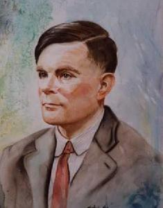

说法1:
苹果在希腊神话中，是智慧的象征，当初亚当和夏娃就是吃了苹果才变得有思想，现在引申为科技的未知领域。苹果公司的标志是咬了一口的苹果，表明了他们勇于向科学进军，探索未知领域的理想。
在决定采用"苹果"这一名字时，创始人注意到他们品牌不遵守习俗的自然特性。这是一种水果的名称--它的视觉符号是被吃掉了一部分的苹果--没什么重要含义，然而这一选择证明了它的价值观--拒绝将计算机神化。苹果是人机关系中离经判道的先行者，人们将不再崇拜或恐惧计算机，而是将之视为一种娱乐。因此该品牌名称符合后来越变越明显的初始想法--一种新的标准已被确立。
说法2:
苹果为什么要用残缺不全的苹果作为自己的logo呢？难道被咬的苹果真是为了纪念计算机之父艾伦·麦席森.图灵？

图灵对于人工智能的发展有诸多贡献，例如图灵曾写过一篇名为《机器会思考吗？》（Can Machine Think?）的论文，其中提出了一种用于判定机器是否具有智能的试验方法，即图灵试验。至今，每年都有试验的比赛。此外，图灵提出的著名的图灵机模型为现代计算机的逻辑工作方式奠定了基础。
因为图灵的同性恋倾向而遭到的迫害使得他的职业生涯尽毁。1952年，他的同性伴侣协同一名同谋一起闯进了图灵的房子实施盗窃。图灵为此而报警。但是警方的调查结果使得他被控以“明显的猥亵和性颠倒行为”。他没有申辩，并被定罪。在著名的公审后，他被给予了两个选择：坐牢或荷尔蒙疗法。他选择了荷尔蒙注射，并持续了一年。在这段时间里，药物产生了包括乳房不断发育的副作用。1954年，图灵因食用浸过氰化物溶液的苹果死亡。（说是咬了一口就死了~）很多人相信他的死是有意的，并判决他的死是自杀。但是他的母亲极力争论他的死是意外，因为他在实验室里不小心堆放了很多化学物品.
图灵享年42岁，科学家为了纪念他，1966年美国计算机协会设立了“图灵奖”成为计算机科学家的最高奖项。后来一位加利福尼亚的小伙子为了纪念图灵，开办了一家公司，而公司的Logo就是图灵死时手里拿着的被咬过一口的苹果，这家公司就是现在很出名的苹果公司，而那个小伙子则是苹果的第一任CEO乔布斯。